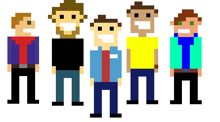
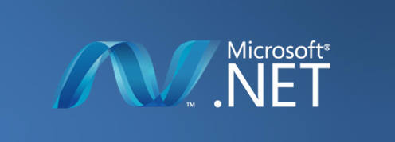

Szkoła Magii i Czarodziejstwa
Witaj na stronie hobbystów programowania w .NET! Znajdziesz tutaj informacje o tym jak m.in wyglądają spotkania grupy, o co chodzi i jak zacząć.
Siła w Grupie
Jesteśmy grupką hobbystów ze szkół średnich oraz Politechniki. Nasze spotkania to nie wykłady, lecz społecznościowe szkolenia. Co to oznacza? Każdy szkoli każdego, opinie są mile widziane i nie ma zwrotów "Pan/Pani" - to nie szkoła : ) Dołączając do nas dostajesz możliwość rozwoju technik prezentacji - bardzo przydatnych na Maturze, czy też w pracy. Występując przed nami na ulubiony temat pozbędziesz się stresu prezentacji, a dodatkowo zadowolisz innych, przekazując im swoja wiedze i doświadczenie. Grupa to nie tylko .NET - w trakcie roku rozmawiamy na własnym TS-ie, grupie STEAM, oraz gramy w rózne gierki. Jesteśmy przekonani, że także Ty będziesz wartościowy dla naszej społeczności!
Dlaczego C#?
Nauczymy cię nie tylko programować, ale i myśleć w .NETcie
Wspólpraca z Microsoft
Dzięki temu, że współpracujemy z Microsoft mamy dostęp do wielu ciekawych ludzi, tutoriali i narzędzi oferowanych dla was poprzez naszych reprezentantów totalnie za free!
© Tomasz Dłuski